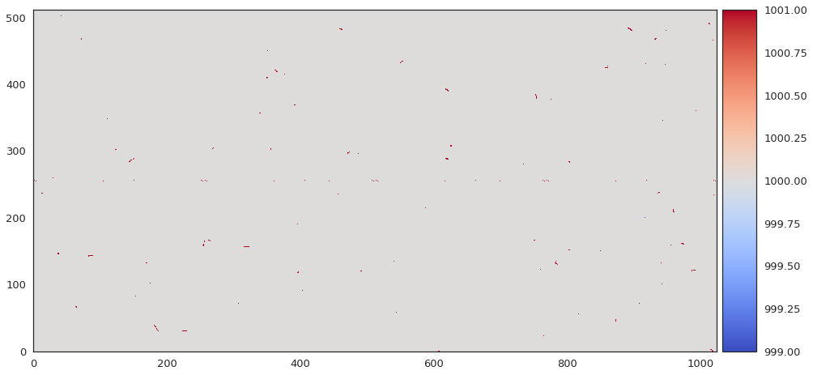
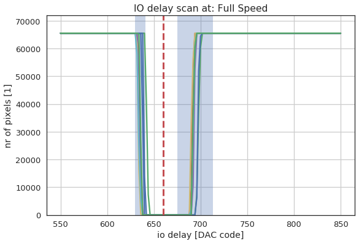
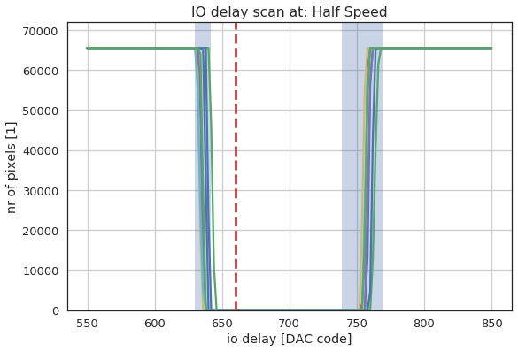
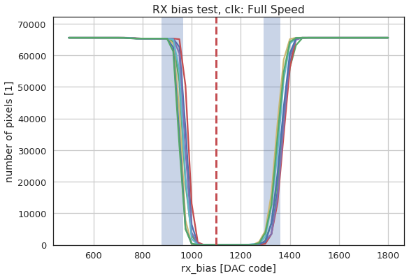
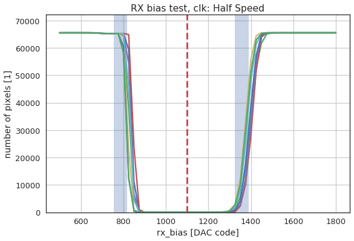

EIGER Tests¶
These are the tests used for the EIGER module testing.
-
sls_detector_tools.eiger_tests.analog_pulses(detector, clk='Half Speed', N=1000)[source]¶ Test the analog side of the pixel using test pulses Normally this test is run only using clock divider 1 Expect to see cosmics in the final image since the pulsing takes around a minute.

-
sls_detector_tools.eiger_tests.counter(detector, clk='Full Speed')[source]¶ Test the digital counter logic. Note this does not test the overflow of the pixel
#Test is done by toggeling enable: 1364 --> 2730 --> 101010101010 682 --> 1366 --> 010101010110
Using enable only increments of 2 in the counter value is possible
-
sls_detector_tools.eiger_tests.generate_report(path)[source]¶ Generate a report based on the contents in a folder outputs a multipage pdf file
-
sls_detector_tools.eiger_tests.io_delay(detector, clk='Full Speed')[source]¶ Scan iodelay and for each step verify that the readout works. Run without pulsing the detector. But half speen and full speed are run as a part of the standard tests.
 
-
sls_detector_tools.eiger_tests.overflow(detector, clk='Half Speed')[source]¶ Overflow test using analog pulses
Unfortunatley the enable toggling cannot be used to check this because of problems when going to overflow
-
sls_detector_tools.eiger_tests.rx_bias(detector, clk='Full Speed', npulse=10)[source]¶ Scan rx bias and check for each value if the data is read out correctly. Toggle the enable using d.pulse_chip(n) to load counter values. Default number of pulses used is 10 while the old software at the probe station uses 721 pulses. The expected number of counts is n_pulses*2 + 2
The output shows a line per chip in the module with blue patches for the normal range (+/- 1 sigma) and a red dashed line for the standard value that we set.
Running the chip at half speed should give a larger rx bias window.
Both tests are a part of the standard EIGER test suite.
-
sls_detector_tools.eiger_tests.setup_test_and_receiver(detector, clk)[source]¶ Contexmanger that is used in many of the tests. Sets up the detector and returns a receiver which can be used to get images from the receiver zmq stream.
clk = 'Full Speed' with setup_test_and_receiver(detector, clk) as receiver: detector.acq() data = receiver.get_frame()